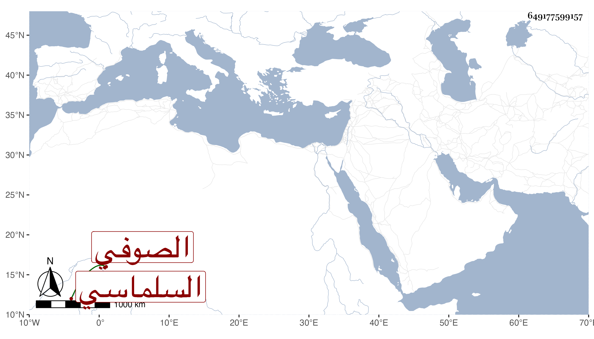

0902Sakhawi.DawLamic.ITO20230111-ara1.EIS1600.649177599157
Biography ID: 649177599157
إبراهيم السلماسي الصوفي ويعرف بابن البقال ممن انتفع به في التصوف ابن الشماع وعظمه جدا ووصفه بسيدي ومرشدي مرشد الخلق أبي الحق الشيخ الإمام القدرة الكامل برهان الملة والدين وقال أنه أخذ عن المحقق عماد الدين إسماعيل عن الإمام الرفيع المقام عبد الرحمن بن إسماعيل عن العارف أبي العباس أحمد الكوربار عن الشيخ لالا والمجد البغدادي عن النجم الكبرى انتهى . ويحتاج إلى تحرير وقال أيضا أن صاحب الترجمة أخذ عن الشيخ عبد الله العجمي الذي عمر مائة سنة وهو عن الشيخ عبد القادر الجيلي وهذا شيء لا يعتمده أهل الحديث .
